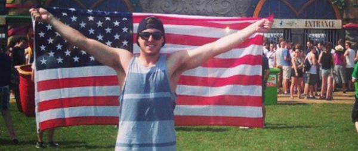
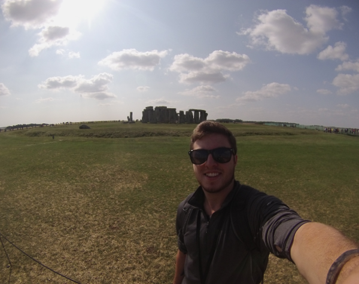

<div class="container-fluid about-page">
    <div class="dark-fill container-fluid">
        <h1>About</h1>
        <div class="container-fluid img-container">
            <div class="col-md-6"></div>
            <div class="col-md-6"></div>
        </div>
        <div class="col-md-12 about-page-content">
            <div class="col-md-6">
                <h3>Background</h3>
                <p>
                    Hi! I'm Connor, a mobile/web developer and this is my personal web site where I hope to give you
                    an idea of who I am. As a graduate of Arizona State University, I have earned my B.S. in Computer
                    Information Systems with a certificate in Small Business &amp; Entrepreneurship. I have a diverse
                    skill set with knowledge in the major development languages including HTML, CSS, JavaScript, Java
                    and more. I absolutely love turning ideas into reality and creating applications that are both
                    visually appealing and useful. You can view some of my work here.
                    <!--TODO: link to projects-->
                    When it comes to development, I've come a long way in learning and truly understanding the best
                    practices and standards that are crucial in order to design a high quality application.
                    Some frameworks that I enjoy and have had success building with are are AngularJS and Twitter Bootstrap.
                </p>
                <p>
                    Although I have experience with and am comfortable building Android applications, I have recently begun
                    researching and diving into hybrid app development where I hope to create some awesome web applications
                    that look and feel like native apps. I am fascinated by every aspect of development. From the design and visual appeal to the back end
                    implementation, I have experience in every stage of the process. However, my expertise and greatest
                    satisfaction lies in data handling and functionality, building the bridge between the front end and back
                    end. I have goals to become a full-stack developer and be able to manage both the front end and back end
                    as well as all layers of an application. I have a strong interest in social applications, connecting others
                    with like interests and providing value through interactions.
                </p>
            </div>
            <div class="col-md-6">
                <h3>Interests</h3>
                <p id="last">
                    When I'm not in front of a computer screen I love being outside. I go running, mountain biking, hiking
                    and enjoy attending music festivals. During the winter months, I will most likely be up in the mountains
                    skiing. This past summer, I went on a 7 week backpacking trip through Europe which sparked a love for
                    traveling. I have an innate desire to explore the world and experience other countries. This passion has
                    led to some fun projects that I've been working on regarding travel applications.
                    <br><br>If you'd like to learn more about me or reach out for any reason, feel free to contact me here.
                    <!--TODO: link to contact-->
                </p>
                
            </div>
        </div>
    </div>
</div>
